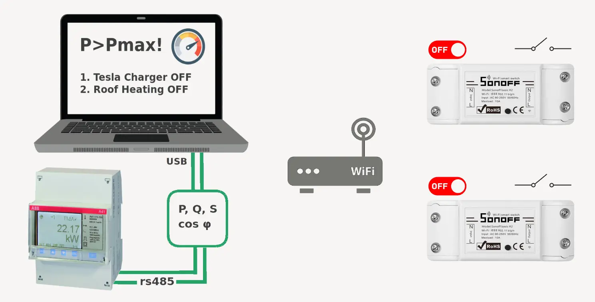
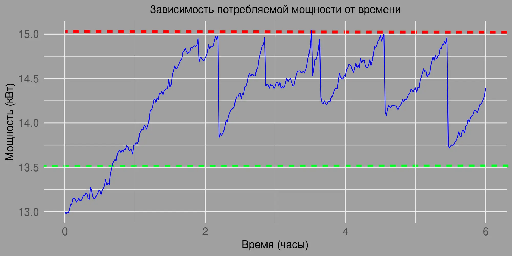
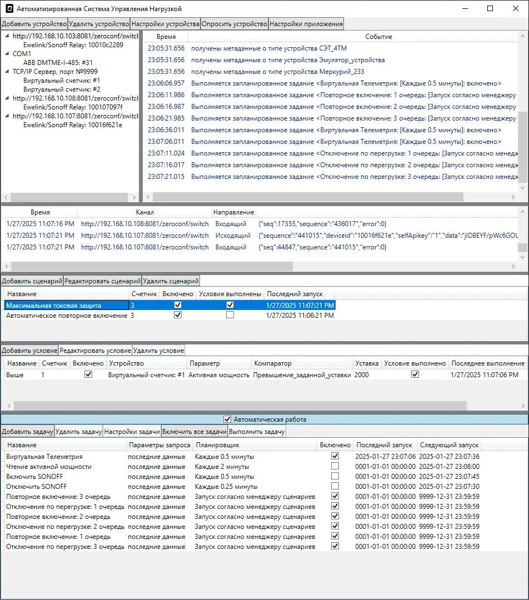

Адаптивное Управление Нагрузкой

Управление мощностью осуществляется за счет отключения или включения нагрузок при выходе измеренного значения мощности за пределы допустимого коридора путём считывания данных с цифрового измерительного устройства на вводе и отправки команд телеуправления на управляемые коммутаторы. При значениях мощности ниже нижнего порога гистерезиса коммутаторы нагрузок будут включены, при превышении верхнего порога гистерезиса коммутаторы нагрузок будут отключены согласно созданному в приложении умному сценарию.

Повторный выход за пределы гистерезисного диапазона будет последовательно отключать следующие по приоритету коммутаторы после истечения защитных интервалов времени. Перебор приоритетной очереди остановится лишь тогда, когда телеметрия вернется в диапазон.
Ключевые характеристики приложения:
- Считывание телеметрии: Приложение считывает данные о текущей активной, реактивной, полной мощности, коэффициенте мощности (cosφ) и других параметрах непосредственно с измерительных устройств, имеющих цифровой интерфейс.
- Локальное управление: Система действует автономно в пределах Вашей локальной сети, напрямую отдавая команды исполнительным устройствам умного дома Ewelink. Это обеспечивает высокую скорость адаптации к изменениям режима потребления энергии, а также гарантирует независимость от внешнего интернета.
- Независимость от Ewelink: Приложение никак не связано с китайской экосистемой Ewelink, но сами исполнительные устройства связаны с китайским облаком умного дома Ewelink. Это позволяет пользователю просматривать состояние устройств в мобильном приложении Ewelink и вручную управлять ими.
- Интеграция с Ewelink (на уровне устройств): За счет того, что исполнительные устройства являются частью китайской экосистемы умного дома Ewelink, пользователь может:
- Просматривать текущее состояние коммутаторов нагрузки в родном мобильном приложении Ewelink.
- Вручную переключать состояние исполнительных устройств или коммутаторов.
- Автоматическая корректировка: Если ручное управление через приложение Ewelink выведет автоматику из допустимых режимов, система автоматически выполнит переключения для восстановления стабильной работы и для возвращения в допустимый диапазон потрбляемой мощности или приемлемый диапазон значений коэффициента мощности cosφ для избежания выставления штрафов энергосбытовой организацией.
- Быстрое реагирование: Скорость срабатывания автоматики определяется периодом опроса измерительного устройства, обычно этот интервал составляет 30 секунд. Этот параметр можно настроить во время пусконаладки системы в соответствии со спецификой технического задания.
- Гибкая настройка: Система позволяет гибко настраивать параметры управления нагрузками, выставляя приоритеты коммутируемым второстепенным потребителям и интервалы времени между коммутациями в цепочке коммутаций каждого адаптивного сценария. Непрерывный режим опроса телеметрии и гранулированность коммутируемой второстепенной нагрузки позволяет обеспечивать постоянный контроль над режимом работы объекта.
- Удаленный контроль: Для технической поддержки, пользовательской настройки и удаленного мониторинга работы программного комплекса можно использовать программу AnyDesk, которая предоставит удаленный доступ к ПК с установленным ПО.
Преимущества системы:
- Надежность: Локальное управление обеспечивает стабильную автоматическую работу системы даже при отсутствии интернет-соединения.
- Безопасность: Исключение зависимости от внешних серверов повышает безопасность и конфиденциальность данных.
- Удобство: Возможность использовать приложение Ewelink для мониторинга и ручного управления при наличии этого требования в техническом задании.
- Автоматизация: Автоматическая корректировка значений потребления энергии и/или коэффициента мощности cos(φ) обеспечивает стабильную работу системы, предотвращает перегрузки и гарантирует отсутствие штрафов от энергосбыта за превышение значений пиковой заявленной мощности (отключение второстепенных потребителей) или снижение коэффициента реактивной мощности cos φ ниже допустимых значений (автоматическое включение батарей конденсаторов для компенсации скачков индуктивных нагрузок).
- Экономия: Автоматическое управление второстепенными нагрузками и батареями конденсаторов позволяет следовать плану потребления электроэнергии и снизить расходы за счет перехода на более строгие и экономически эффективные тарифы энергосбытовой организации, а также нивелировать вероятность получения штрафов за несоблюдение cos(φ), графиков, режимов и планов потребления энергии. При уделении должного внимания расчету автоматически коммутируемых нагрузок и емкостей установка данного программного комплекса может окупиться в течение нескольких недель работы.
Это решение идеально подходит для тех, кто ищет надежную, автономную и гибко настраиваемую систему управления энергопотреблением с возможностью интеграции в существующую или планируемую инфраструктуру умного дома Ewelink.
